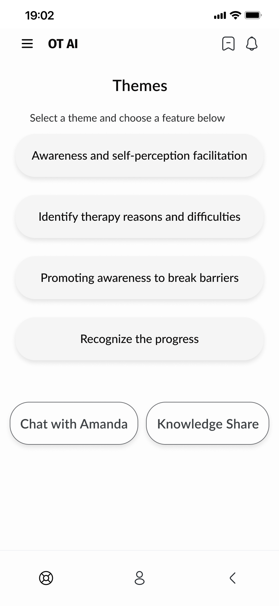
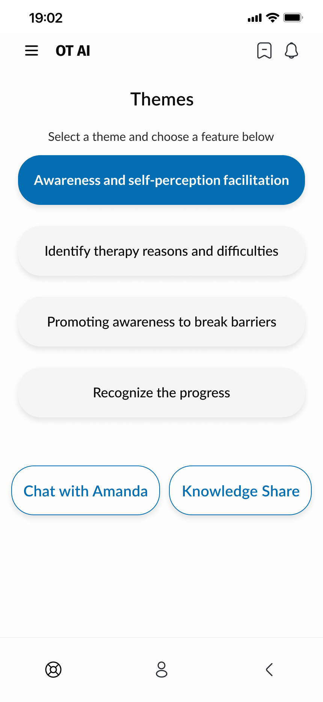
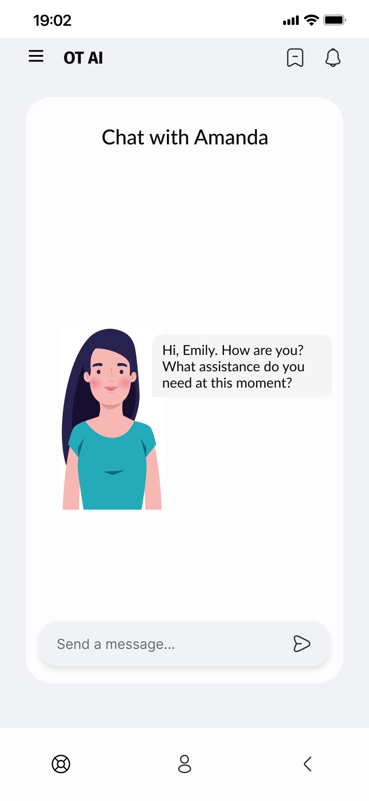

01From the group sessions
Start every session from a clinical theme
- Found
- The group sessions showed therapists' difficulties cluster into a few recurring clinical themes.
- Chose
- Each session starts with picking a theme, so the conversation has a focus from the first message.

1Pick a theme

2Theme selected

3Chat with Amanda